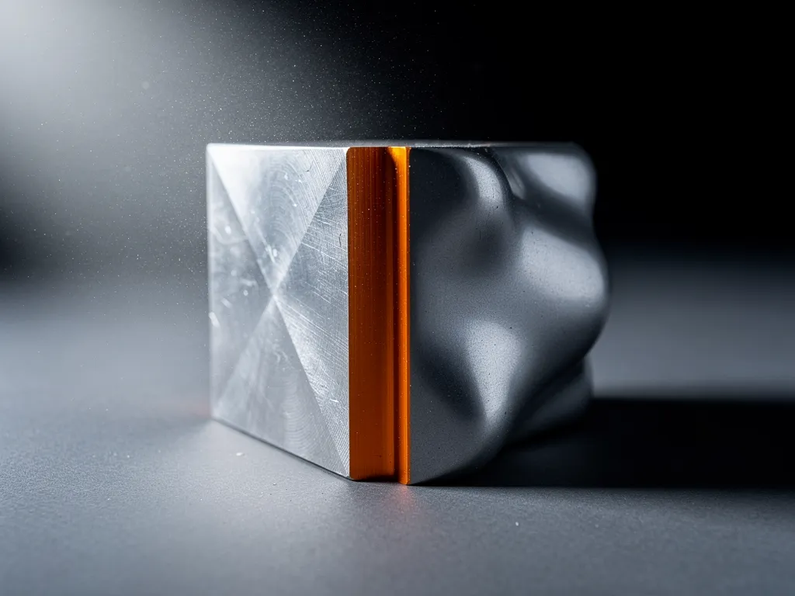
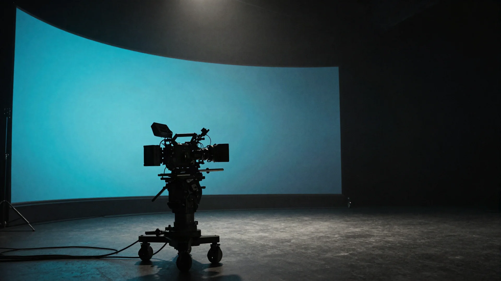
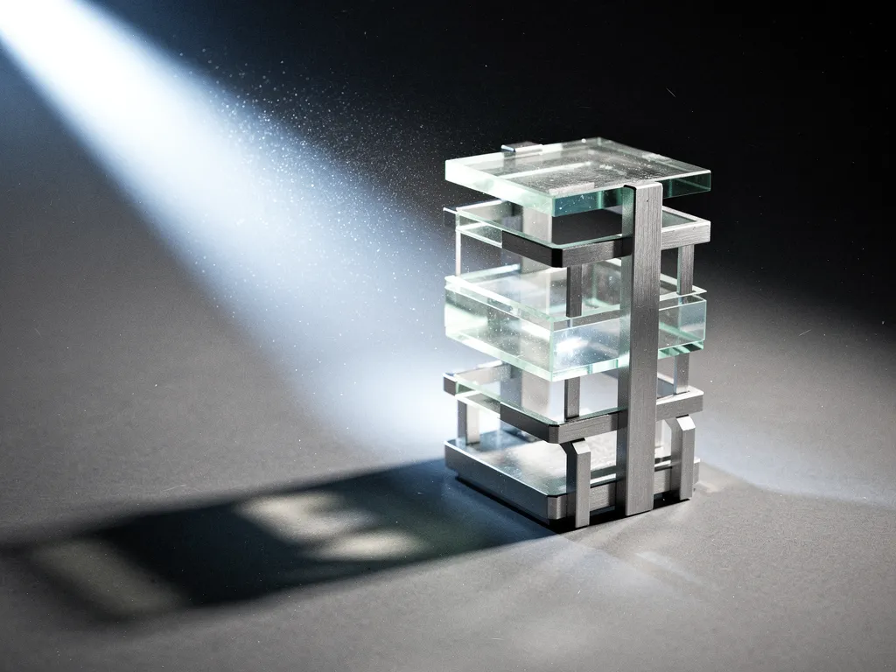

Blender
0 indexed
The deepest free ecosystem of the four. Ten ship with Blender itself under the GPL, the rest are open repositories.
Plate 001 Blender

Plate 002 Unreal Engine
Licence, engine, host, source, tags and the date it was last checked. If a field cannot be filled from the project itself, the entry does not ship. That is why the counts are smaller than a scraper would give you.
Nothing here links to a storefront, a mirror or a reupload. Every source is the project's own page.
The counts below are not balanced, and nothing has been padded to make them look it.

0 indexed
The deepest free ecosystem of the four. Ten ship with Blender itself under the GPL, the rest are open repositories.

0 indexed
Smaller and almost entirely on GitHub under MIT. Much of what gets called free here is really a storefront listing.
0 indexed
Split in two: first party packages under the Unity Companion licence, and a strong MIT community on GitHub.
0 indexed
The thinnest lane, and every entry is a bridge out to another application. Daz gives away figures, not tooling.
Godot, Houdini, Maya and ZBrush are next. The index grows by what can be checked, not by what can be scraped.
The index above needs no key at all. Add an OpenRouter key in settings and the same field also searches the live web for addons that are not indexed yet.
The key is written to this browser's local storage and sent to one address only, openrouter.ai. There is no server here to send it to.
Open settingsStored with localStorage on this device. Clearing your browser data removes it.
gap
The index only knows what has been checked. Write down what is missing and this browser keeps the note, so you can pick it up next time you are here.